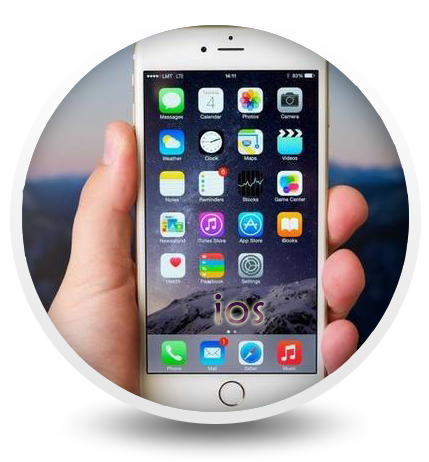

万维网的核心语言、标准通用标记语言下的一个应用超文本标记语言（HTML）的第五次重大修改,（这是一项推荐标准、外语原文：W3C Recommendation、见本处参考资料原文内容：[1] ）。 2014年10月29日，万维网联盟宣布，经过接近8年的艰苦努力,HTML5标准规范终于制定完成。
学习HTML5UI即User Interface(用户界面)的简称。 UI设计是指对软件的人机交互、操作逻辑、界面美观的整体设计。 好的UI设计不仅是让软件变得有个性有品位， 还要让软件的操作变得舒适简单、自由，充分体现软件的定位和特点。
学习UIJava是一门面向对象编程语言，不仅吸收了C++语言的各种优点，还摒弃了C++里难以理解的多继承、 指针等概念，因此Java语言具有功能强大和简单易用两个特征。 Java语言作为静态面向对象编程语言的代表，极好地实现了面向对象理论， 允许程序员以优雅的思维方式进行复杂的编程。
学习JavaiOS是由苹果公司开发的移动操作系统。苹果公司最早于2007年1月9日的Macworld大会上公布这个系统，iOS与苹果的Mac OS X操作系统一样， 属于类Unix的商业操作系统。原本这个系统名为iPhone OS，因为iPad，iPhone，iPod touch都使用iPhone OS。
学习ios
在1984年到2010年间，一直供职于Sun微系统公司。在2010年甲骨文收购Sun后不久，并在2011年初加入谷歌。

1963年，出生于中国河南。他的房间里总是堆满了最新的电子产品，他每天都待在屋里拆拆卸卸，乐此不疲。极客（Geek）基因从此种下。

曾在NCR公司和Agere公司担任电气工程师。不过，技术给他带来的名气远不如外交技巧，他主持了802.11无线局域网标准的制定工作。目前，他在荷兰德尔福特理工大学担任高级研究员。